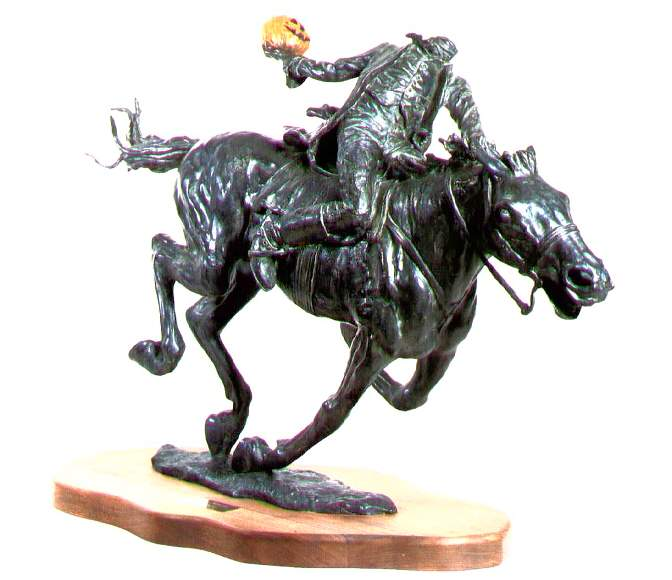
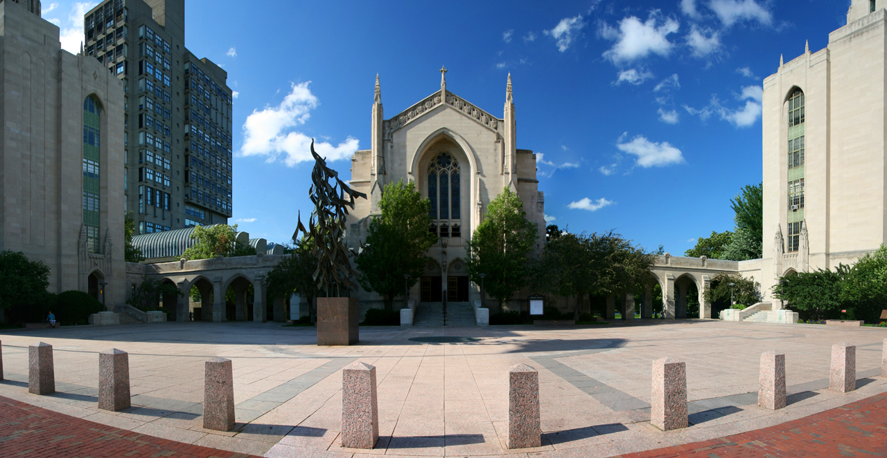

My RootsSleepy Hollow, NY

This is where I grew up. I played baseball and basketball as a kid, before playing football, lacrosse, and running indoor track (hurdles and high jump) in high school. Yes, our mascot was the Headless Horseman, but no, sadly it wasn't Christopher Walken. I played cello from 3rd-12th grades and began learning guitar in high school. I was president of my senior class, which makes me somewhat nervous because I think I may be responsible for organizing our ten-year reunion, which is now less than a year away.
UndergradBoston University - Boston, MA

This is where I went to school. I received my B.A. in Economics with a minor in Anthropology (my original concentration). For about a year I played bass and guitar in a band that was first called B!LF, then Field Day to have a more "respectable" name. I studied abroad in Sydney, Australia for a semester where I held an internship working for the retail division within the Historic Houses Trust, a government-funded Trust that manages many of the museums and historic sites in and around Sydney.
Current CareerBBVA - New York, NY
This is where I work. Like the rest of the Class of 2009, I quickly found out that job hunting during the worst recession since the depression was not the easiest of tasks. I worked as a substitute teacher for about a year before landing a one-month temp job at a large, international, Spanish bank. I managed to turn that temp job into an internship (with health benefits!), and soon a full-time position. I now know Spanish and play on our co-ed corporate volleyball team, which are my favorite parts of my job.
FutureGeneral Assembly - New York, NY
This is where I want to be. Coding has always been a dream in the back of my mind since dipping my toes into Java programming during computer science coursework at Boston U. and my self-taught forays into HTML, CSS, and JavaScript when I was substitute teaching. I am happiest when building something where there was nothing before, and after working ahead in the DASH lessons and realizing just how much further my skills can go, I'm more sure than ever that I'm ready to make this career switch.